In [1]: import CoolProp as CP
In [2]: print CP.__version__
4.0.0beta
In [3]: print CP.__gitrevision__
9b3ab64937af9f575949e110da5eb06d8e3fa5fa
#Import the things you need
In [4]: from CoolProp.CoolProp import Props
In [5]: import timeit
#Specific heat (kJ/kg/K) of 20% ethylene glycol as a function of T
In [6]: Props('C','T',298.15,'P',101.325,'EG-20%')
Out[6]: 3.9052706242925868
#Density of Air at standard atmosphere in kg/m^3
In [7]: Props('D','T',298.15,'P',101.325,'Air')
Out[7]: 1.184318483867507
#Saturation temperature of Water at 1 atm
In [8]: Props('T','P',101.325,'Q',0,'Water')
Out[8]: 373.12429584768273
#Saturated vapor density of R134a at 0C
In [9]: Props('H','T',273.15,'Q',1,'R134a')
Out[9]: 398.6034536276549
#Using properties from REFPROP to get R410A density
In [10]: Props('D','T',300,'P',100,'REFPROP-MIX:R32[0.697615]&R125[0.302385]')
Out[10]: 2.9473184388106124
#Check that the same as using pseudo-pure
In [11]: Props('D','T',300,'P',100,'R410A')
Out[11]: 2.947304301269565
The documentation of the CoolProp.CoolProp module, or the CoolProp.State module are also available.
Nearly all the fluids modeling in CoolProp are based on Helmholtz energy formulations. This is a convenient construction of the equation of state because all the thermodynamic properties of interest can be obtained directly from partial derivatives of the Helmholtz energy.
It should be noted that the EOS are typically valid over the entire range of the fluid, from subcooled liquid to superheated vapor, to supercritical fluid.
Annoyingly, different authors have selected different sets of nomenclature for the Helmholtz energy. For consistency, the nomenclature of Lemmon will be used here. Also, some authors present results on a mole-basis or mass-basis, further complicating comparisons.
In general, the EOS are based on non-dimensional terms  and
and  , where these terms are defined by
, where these terms are defined by
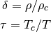
where 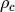 and 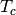 are the critical density of the fluid if it is a pure fluid. For pseudo-pure mixtures, the critical point is typically not used as the reducing state point, and often the maximum condensing temperature on the saturation curve is used instead.
The non-dimensional Helmholtz energy of the fluid is given by
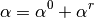
where 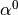 is the ideal-gas contribution to the Helmholtz energy, and  is the residual Helmholtz energy contribution which accounts for non-ideal behavior. For a given set of and , each of the terms and are known. The exact form of the Helmholtz energy terms is fluid dependent, but a relatively simple example is that of Nitrogen, which has the ideal-gas Helmholtz energy of
is the residual Helmholtz energy contribution which accounts for non-ideal behavior. For a given set of and , each of the terms and are known. The exact form of the Helmholtz energy terms is fluid dependent, but a relatively simple example is that of Nitrogen, which has the ideal-gas Helmholtz energy of
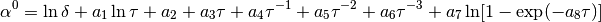
and the non-dimensional residual Helmholtz energy of
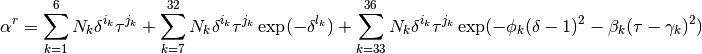
and all the terms other than and are fluid-dependent correlation parameters.
The other thermodynamic parameters can then be obtained through analytic derivatives of the Helmholtz energy terms. For instance, the pressure is given by
![p=\rho RT\left[1+\delta\left(\frac{\partial \alpha^r}{\partial \delta}\right)_{\tau} \right]](_images/math/042256a34af6103acefb171d7b634a2facb0c80f.png)
and the specific internal energy by
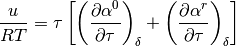
and the specific enthalpy by
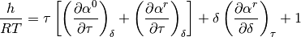
which can also be written as
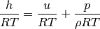
The specific entropy is given by
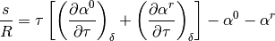
and the specific heats at constant volume and constant pressure respectively are given by
![\frac{c_v}{R}=-\tau^2 \left[\left(\frac{\partial^2 \alpha^0}{\partial \tau^2}\right)_{\delta}+ \left(\frac{\partial^2 \alpha^r}{\partial \tau^2}\right)_{\delta} \right]
\frac{c_p}{R}=\frac{c_v}{R}+\dfrac{\left[1+\delta\left(\frac{\partial \alpha^r}{\partial \delta}\right)_{\tau}-\delta\tau\left(\frac{\partial^2 \alpha^r}{\partial \delta\partial\tau}\right)\right]^2}{\left[1+2\delta\left(\frac{\partial \alpha^r}{\partial \delta}\right)_{\tau}+\delta^2\left(\frac{\partial^2 \alpha^r}{\partial \delta^2}\right)_{\tau}\right]}](_images/math/81c726df9544fc83574889289dbe015acd2168de.png)
The EOS is set up with temperature and density as the two independent properties, but often other inputs are known, most often temperature and pressure because they can be directly measured. As a result, if the density is desired for a known temperature and pressure, it can be obtained iteratively. The following algorithm is used to obtain a reasonable guess for the initial value for the iterative solver:
If the fluid is somewhere in the two-phase region, or saturation state properties are desired, saturated liquid and vapor properties can be obtained. At equilibrium, the Gibbs function of the liquid and vapor are equal, as are the pressures of the saturated liquid and vapor. For nearly all pure fluids, ancillary equations for the density of saturated liquid and saturated vapor as a function of temperature are provided, given by 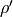 and 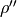 respectively. Thus for pure fluids, for a given temperature, initial guesses for the densities of saturated liquid and vapor are given by and . Using one of the densities, a guess for the saturation pressure can be obtained. Then, the saturation pressure is iteratively altered using a numerical method. For each saturation pressure, the saturated liquid and vapor densities are updated using the full EOS to match the imposed temperature and guessed pressure. Because the density is known explicitly from the EOS, Newton’s method can be used to update the densities. For Newton’s method, the derivative 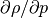 is needed, which can be given explicitly as
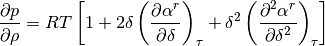
and the value for  is updated by employing
is updated by employing
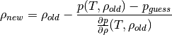
until 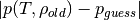 is sufficiently small. Then the numerical method calculates the Gibbs function for saturated liquid and saturated vapor, and uses the difference in Gibbs functions to update the guess for the saturation pressure. Then the densities are calculated again. At convergence, the set of , , and 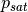 are known for a given saturation temperature. If the fluid is not a pure fluid, the best that you can do is to use the ancillary equations to calculate the saturation densities and saturation pressure.
As you might imagine, doing all this work to calculate the saturation state for pure fluids is computationally very expensive, so a lookup table method has been implemented for the saturation densities and saturation pressure. From Python, you can turn on the saturation lookup table with:
UseSaturationLUT(True)
or use the full EOS by calling:
UseSaturationLUT(False)
As a reminder, the EOS is typically set up as a function of 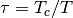 and 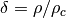. Thus, if you know pressure and enthalpy, you can set up a system of residuals in terms of and in order to yield back the given pressure and enthalpy. Of course you still need a good guess value to start from. See below for that. The system of equations can be given by:
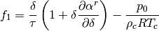
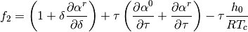
where the partials can be given by

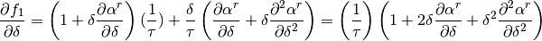
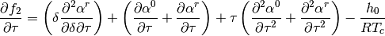

and the jacobian is then
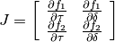
For a limited selection of fluids, correlations are provided for the viscosity and the thermal conductivity. But for many fluids, no correlations are available, and therefore other methods must be employed. The extended corresponding states is a method of estimating the transport properties of a fluid by analogy with the transport properties of a fluid that are well defined.
Implementing the ECS method is quite a challenge, but CoolProp is one of the only fluid property databases that properly implements it. And the onlyopen-source package that does. A multi-step method is required, which is hopefully clearly laid out here.
To begin with, the reference fluid must be selected that the fluid of interest will be compared with. Ideally the shape of the molecules should be similar, but in practice, most fluids use R134a as the reference fluid since its thermodynamic and transport properties are well quantified with reference-quality correlations.
Once the reference fluid has been selected, the conformal state of the reference fluid must be determined. The conformal state is the state at which the transport properties of the reference fluid and the fluid of interest are (in theory) the same. In practice, at low densities the shape factors are assumed to be unity, and the conformal temperature and molar density are obtained from
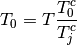
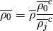
Exact solution for the conformal temperature
If you have Helmholtz EOS for both the fluid and the reference fluid, you need to find a conformal temperature for the reference fluid that will yield the same compressibility factor and the residual Helmholtz energy
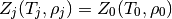
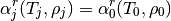
where “j” is for the fluid of interest, and the subscript “0” is for the reference fluid. The left side of each equation is already known from the equation of state. Literature suggests that solving for  and directly is quite challenging. See McLinden 2000 or Klein 1997.
and directly is quite challenging. See McLinden 2000 or Klein 1997.
Alternatively, if the shape factors  and
and  are known, either from correlation or otherwise, the conformal temperature and density can be calculated directly.
are known, either from correlation or otherwise, the conformal temperature and density can be calculated directly.
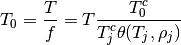
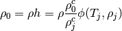
Much of the time the coefficients for the ideal-gas part of the Helmholtz energy are given directly, but sometimes only the gas-specific heat is provided. Therefore you need to be able to go from specific heat to ideal-gas Helmholtz Energy. The ideal-gas Helmholtz energy is given by Equation 23 from Lemmon, 2004, Equations of State for Mixtures of R-32, R-125, R-134a, R-143a, and R-152a, J. Phys. Chem. Ref. Data, Vol. 33, No. 2, 2004 or
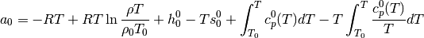
non-dimensionalizing
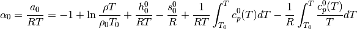
Now we might want to do a change of variable in the integrals. If so, do a u-substitution in the integrals.
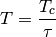
where
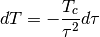

Simplifying and factoring the term yields
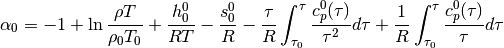
which finally yields the solution as of Equation 3 from Lemmon, 2003 (and others)
The specific-heat contribution can then be taken as a sum of the contributions
for a term of the form
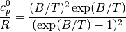
the contribution is found from
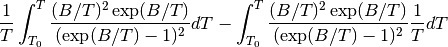
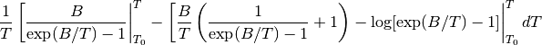
Factor out a B, First two terms cancel, leaving
![- \left[ \frac{B}{T} - \log[\exp(B/T)-1] \right|_{T_0}^T dT](_images/math/3b52e043f875e776c8e415f684dfde7a996c0173.png)
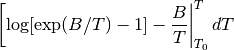
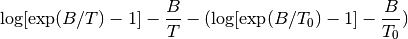
or in terms of
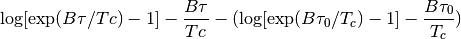
for a term of the form
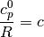
the contribution is found from
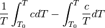
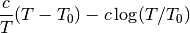
or in terms of
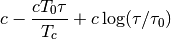
for a term of the form
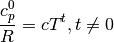
the contribution is found from
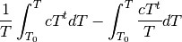
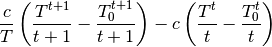
or in terms of

These terms can be summarized by the following table:
![\begin{array}{*{20}{c}}
{\dfrac{{c_p^0}}{R}{\rm{ Term}}}&{{\alpha ^0}{\rm{ Term}}}&{{\rm{Class Name}}}&{}&{}&{}&{}&{}\\
{{a_k}\dfrac{{{{\left( {{b_k}/T} \right)}^2}\exp \left( {{b_k}/T} \right)}}{{{{\left( {\exp \left( {{b_k}/T} \right) - 1} \right)}^2}}}}&{{a_k}\ln \left[ {1 - \exp \left( {\frac{{ - {b_k}\tau }}{{{T_c}}}} \right)} \right]}&{{\rm{phi0\_Planck\_Einstein}}(a,b/Tc,[iStart,iEnd])}&{}&{}&{}&{}&{}\\
{ac\frac{{{{\left( {b/T} \right)}^2}\exp \left( { - b/T} \right)}}{{{{\left( {c\exp \left( { - b/T} \right) + 1} \right)}^2}}}}&{a\ln \left[ {c + \exp \left( {\frac{{b\tau }}{{{T_c}}}} \right)} \right]}&{{\rm{phi0\_Planck\_Einstein2}}(a,b/Tc,c)}&{}&{}&{}&{}&{}\\
{yuck}&{{a_k}{\tau ^{{b_k}}}}&{{\rm{phi0\_power}}\left( {a,b,[iStart,iEnd]} \right)}&{}&{}&{}&{}&{}\\
a&{a - a\frac{\tau }{{{\tau _0}}} + a\ln \left( {\frac{\tau }{{{\tau _0}}}} \right)}&{{\rm{phi0\_cp0\_constant}}(a,Tc,T0)}&{}&{}&{}&{}&{}\\
{{a_1} + {a_2}{{\left( {\frac{{{a_3}/T}}{{\sinh \left( {{a_3}/T} \right)}}} \right)}^2} + {a_4}{{\left( {\frac{{{a_5}/T}}{{\cosh \left( {{a_5}/T} \right)}}} \right)}^2}}&{yuck}&{{\rm{phi0\_cp0\_AlyLee}}(a,Tc,T0,R)}&{}&{}&{}&{}&{}\\
{{\rm{n/a}}}&{\log (\delta ) + {a_1} + {a_2}\tau }&{{\rm{phi0\_lead(}}a1,{\rm{ }}a2{\rm{)}}}&{}&{}&{}&{}&{}\\
{{\rm{n/a}}}&{a\log \tau }&{{\rm{phi0\_logtau}}(a)}&{}&{}&{}&{}&{}
\end{array}](_images/math/f0be7ac6ac82c867e0180af2124d28813a59dff6.png)
If the reference enthalpy is known, you can determine the constants from
For the specific heat The two integral terms are
First derivative
Second Derivative
If the EOS is of the form
To convert to standard power form in CoolProp, use
The left-hand-side is the derivative of the residual Helmholtz energy with respect to delta times the reduced density since
where

In the Bender EOS, for the exponential part you have terms that can be converted to reduced form
which yields the terms in the following table (from Span, 2000)
![\begin{array}{*{4}{c}|*{4}{c}}
\multicolumn{4}{c}{\mbox{From Bender}} & \multicolumn{4}{c}{\mbox{Power term}}\\
{i}&{d_i}&{t_i}&{\gamma_i}&{n_i}&{d_i}&{t_i}&{\gamma_i}\\\hline
{14}&2&3&\gamma &{{n_{14}}/(2\gamma) + {n_{17}}/(2{\gamma ^2})}&0&3&0\\
{15}&2&4&\gamma &{{n_{15}}/(2\gamma) + {n_{17}}/(2{\gamma ^2})}&0&4&0\\
{16}&2&5&\gamma &{{n_{16}}/(2\gamma) + {n_{17}}/(2{\gamma ^2})}&0&5&0\\
{17}&4&3&\gamma &{ - {n_{14}}/(2\gamma) - {n_{17}}/(2{\gamma ^2})}&0&3&\gamma \\
{18}&4&4&\gamma &{ - {n_{15}}/(2\gamma) - {n_{18}}/(2{\gamma ^2})}&0&4&\gamma \\
{19}&4&5&\gamma &{ - {n_{16}}/(2\gamma) - {n_{19}}/(2{\gamma ^2})}&0&5&\gamma \\
{20}&{}&{}&{}&{ - {n_{17}}/(2{\gamma})}&2&3&\gamma \\
{21}&{}&{}&{}&{ - {n_{18}}/(2{\gamma})}&2&4&\gamma \\
{22}&{}&{}&{}&{ - {n_{19}}/(2{\gamma})}&2&5&\gamma
\end{array}](_images/math/f9cf5a29c7d30509f895c3518ba720c4c9b6268c.png)
Warning
If the terms in the EOS are in terms of  and rather than and , make sure to multiply appropriately by the critical densities in the exponential term. For instance in Polt paper, the first constant should be Be careful!
and rather than and , make sure to multiply appropriately by the critical densities in the exponential term. For instance in Polt paper, the first constant should be Be careful!